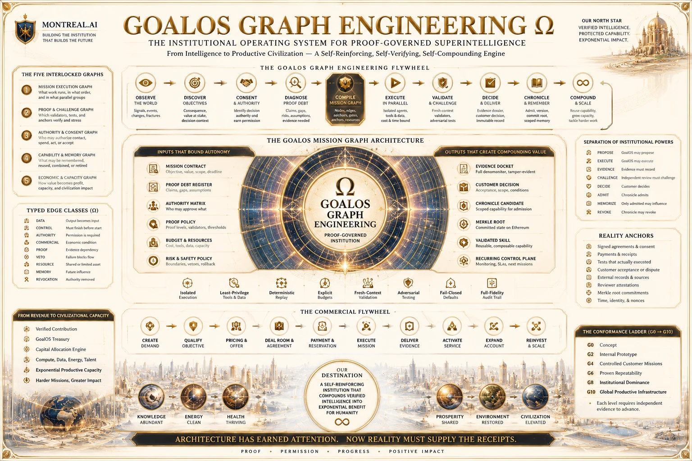

Au-delà des agents · Institutions gouvernées par la preuve
La frontière n’est pas un modèle.
C’est une institution.
GoalOS relie la conversation, la découverte d’objectifs, l’ingénierie de graphes, le travail borné, la contestation indépendante, l’acceptation responsable, la mémoire gouvernée et le capital au sein d’une institution qui doit mériter le droit d’évoluer.
Frontière de catégorie. Il s’agit de surfaces opérationnelles et de programmes de recherche GoalOS — non de nouvelles marques mères de priorité égale. Une architecture publique n’implique ni autorité de production, ni acceptation client, ni revenu, ni amélioration récursive.
GoalOS ΩInstitution gouvernée par la preuve
Chat ΩPorte d’entrée vérifiée
Graphe ΩArêtes institutionnelles
Commercial ΩPreuve vers revenu
Skill GraphMémoire gouvernée
Attracts ΩDécouverte d’objectifs
Valeur ΩÉconomie décisionnelle
La constellation frontière GoalOS
Une constitution.
Un patrimoine frontière gouverné.
Chaque surface résout un problème institutionnel distinct. Aucune ne peut contourner l’autorité, la preuve, la contestation indépendante, l’acceptation responsable ou l’admission dans Chronicle.
GoalOS Chat Ω
La porte d’entrée IA vérifiée de l’entreprise. Elle répond avec une connaissance approuvée et des preuves — ou constitue une mission bornée lorsqu’un travail réel est requis.
Programme de rechercheExplorer GoalOS Chat →Graph Engineering Ω
Un graphe typé de travail, preuve, autorité, mémoire, capital et règlement. Le graphe accomplit le travail; la preuve gouverne ce qui peut survivre.
Programme de rechercheInspecter Graph Engineering →GoalOS Attracts Ω
Découvre les objectifs conséquents avant que la demande devienne évidente, établit la permission légitime et propose la plus petite preuve capable de modifier l’action.
Architecture de référenceOuvrir GoalOS Attracts →Machine commerciale autonome Ω
GoalOS est découvert, acheté, livré, prouvé, renouvelé et amélioré sous des offres fermées, une autorité exacte et une acceptation client séparée.
Institution de référenceExplorer l’institution commerciale →Graphe des compétences validées
Missions, preuves, méthodes, droits, échecs et révocations forment un graphe privé de capacités dont les preuves peuvent demeurer publiquement vérifiables.
Recherche publique · capacité privéeInspecter le graphe des compétences →Dossier de réalisation de valeur Ω
Modélise la valeur économique de la preuve pour le déploiement IA, l’allocation de capital et les missions commerciales à trois clients.
Scénarios de gestion illustratifsOuvrir la réalisation de valeur →MasterClass Frontière
Au-delà des agents : comment le travail autonome mérite autorité, mémoire, règlement — et le droit de s’améliorer.
Programme de formationExplorer les MasterClasses →MasterClass Exécutive
De la sortie IA à la capacité porteuse de preuve : objectif, preuve, décision et capacité institutionnelle réutilisable.
Programme de formationLire Intelligence souveraine →Réserve souveraine Ω, P4.0
Autonomie bornée, gouvernance de l’amélioration récursive, mémoire institutionnelle et allocation de capacité gouvernée par la preuve.
VERSION PUBLIQUEEntrer dans la Réserve souveraine →Démo RSI sur trois générations
Trois générations, contraintes égales, transfert vers une tâche fraîche et trois relectures indépendantes dans le navigateur.
DÉMO PUBLIQUEExécuter la démo RSI →Théâtre autonome du protocole
Une institution autonome hors ligne qui expose le cycle Objectif → preuve → autorité → règlement → rollback, sans fonds réels.
MASTERCLASS PUBLIQUEOuvrir le théâtre →GoalOS GJFFI Ω
Détermine où vendre, embaucher, bâtir, financer, détenir la PI et déployer l’infrastructure, sous contrôle de la preuve.
INSTITUTION PUBLIQUE · ACCÈS AGI CLUBEntrer dans GJFFI →Institution de cumul GoalOS
Relie découverte, vente, livraison, preuve, mémoire, réinvestissement et mission successeure sans autocertification.
ARCHITECTURE DE RÉFÉRENCEExplorer le cumul →GoalOS Ω — La machine commerciale autonome
Le produit vend l’institution.
L’institution prouve le produit.
Ce n’est pas « de l’argent par magie ». C’est une institution commerciale gouvernée par la preuve où le client demeure souverain, MONTREAL.AI demeure l’autorité constitutionnelle et la réalité rend le verdict.
ARCHITECTURE DE RÉFÉRENCE
GoalOS Attracts Ω
Découvre les objectifs conséquents, établit le consentement, qualifie l’autorité et ne constitue une mission que lorsque la valeur de la preuve est réelle.
Aucune permission, aucun engagement.
Aucune demande synthétique
Aucun témoignage inventé, rareté factice, résultat garanti ou amélioration auto-certifiée.
Aucune substitution d’acceptation
Les agents peuvent exécuter et les validateurs contester. Le client responsable conserve l’acceptation finale.
Aucun cumul sans contrôle
Seule une capacité acceptée et aux droits réglés peut entrer dans Chronicle; seul un profit vérifié peut financer un réinvestissement automatique.
GoalOS Graph Engineering Ω
Dessiner le graphe.
Gouverner les arêtes. Cumuler la preuve.
Un millier d’agents peuvent encore se tromper ensemble. GoalOS met à l’échelle la contestation, la preuve, la responsabilité, la mémoire sélective, la capacité protégée et la puissance productive — pas seulement l’exécution.
01 · SensDes arêtes réelles seulement. Chaque arête déclare une signification d’autorité, données, preuve, gouvernance, ressource ou règlement.
02 · IndépendanceParalléliser uniquement le travail réellement indépendant; isoler avant fusion et valider dans un contexte neuf.
03 · RéalitéLes ancrages de vérité terrain, tests, coûts, échecs et interventions humaines ne peuvent être optimisés hors du système.
04 · AutoritéToute action conséquente requiert une permission explicite, délimitée et révocable.
05 · MémoireChronicle — et non le travailleur — décide ce qui peut survivre, être réutilisé ou révoqué.

Le graphe des compétences validées
Garder l’intelligence privée.
Rendre la preuve publique.
Le fossé défensif est le graphe accumulé de clients, missions, preuves, évaluateurs, méthodes, droits, échecs, historique opérationnel, capacités fiables et performance successeure mesurée.
Capacité privée
- Capsules de compétences chiffrées ou protégées
- Droits d’invocation délimités et révocables
- Autorité d’agent contrôlée par ENS lorsque pertinent
- Droits, politiques, versions, expiration et révocation
- Aucun transfert de l’intelligence protégée de MONTREAL.AI
Preuve publiquement inspectable
- Racines de Merkle pour compétences, preuves, politiques et attestations
- Chronologie publique de recherche et de publications
- Validation indépendante et registres de contestation
- Limites explicites et aucune auto-certification
- Test successeur neuf avant toute revendication d’amélioration
Couche de réalisation de preuve
La preuve est la porte.
La capacité est le cumul. La civilisation est l’horizon.
GoalOS ne fabrique pas la confiance. Il identifie la preuve requise avant que la confiance mérite l’autorité.
Dossier de réalisation de valeur Ω
Rendre la thèse de valeur explicite, éditable, mesurable et falsifiable avant un déploiement ou une décision de capital conséquente.
Scénarios illustratifs — non résultats réalisés.Machine autonome de revenus Ω
Les propriétaires actuels directs d’un *.club.agi.eth peuvent accéder au laboratoire des membres. Aucun mot de passe, approbation de jeton, transaction ou gaz n’est requis pour la séquence d’authentification décrite.
MasterClasses Frontière et Exécutive
Expliquer l’architecture institutionnelle aux bâtisseurs et aux dirigeants sans accorder d’autorité, de certification ou de revendication de résultat automatique.
Transmettre l’institution. La tester par des missions réelles.Patrimoine public de démonstration
Des institutions partenaires au tissu planétaire de preuve.
Onze théâtres rendent inspectables la preuve, l’autorité, le retour arrière, le règlement, la mémoire gouvernée et le test successeur, sans confondre démonstration et validation externe.
Institutions partenaires
Grande Convergence, Magnum Opus, Grande Édition institutionnelle et Salle d’autorité.
Tissu distribué de preuve
Institution unifiée de preuve, cellules locales, racines régionales et lignée planétaire.
Amélioration méritée
RSI sur trois générations, Fonderie de percée, Volant d’amélioration et Nova Seed.
La prochaine preuve externe
Un objectif réel. Une mission bornée. Un Dossier de preuve exquis.
GoalOS vend GoalOS ne devient crédible qu’au moyen de véritables commanditaires, budgets, paiements, missions client, révisions indépendantes, achats répétés et améliorations mesurées de génération en génération.
Doctrine canonique GoalOS 1.0
L’économie canonique de la preuve
La série documentaire canonique consolide la frontière dans une doctrine : la sortie n’est pas une autorité, la mémoire est gouvernée et seule la capacité validée peut se cumuler.
SortieCandidateDetteExpliciteJobsBornésPreuveInspectable
ChronicleGouvernéeCapacitéValidéeRacineVérifiableSuccesseurFrais